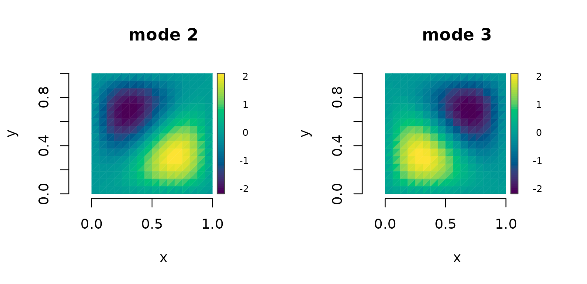

Shift-and-invert subspace iteration
solve_eigen() computes eigenpairs K\mathbf x = \lambda M\mathbf x of the
operator of an elliptic_problem() without advection
(Dirichlet conditions remove the prescribed degrees of freedom; Neumann
and Robin terms enter K) or of an
elasticity_problem() (vibration modes). It returns the
pairs nearest to a shift \sigma. One
sparse factorization of K - \sigma M is
reused at every iteration, and a Rayleigh-Ritz step on a block of n + 8 vectors extracts the approximations.
Iteration stops when every requested pair has a normwise relative
residual below tol.
On the unit square with Dirichlet conditions the eigenvalues are \pi^2(j^2 + k^2):
ev <- solve_eigen(elliptic_problem(pde_mesh_rectangle(nx = 16), bcs = dirichlet_bc(0)), n = 6)
ev
#> <pde_eigen> 6 eigenpairs nearest 0 (22 iterations, largest residual 4.1e-11)
#> values: 19.92979 50.166387 50.632876 81.971343 102.46039 102.54523
round(ev$values / pi^2, 3)
#> [1] 2.019 5.083 5.130 8.305 10.381 10.390The eigenvalue error converges at order 2p for degree p:
conv <- sapply(1:2, function(deg) sapply(c(4, 8, 16), function(n) {
p <- elliptic_problem(pde_mesh_rectangle(nx = n), bcs = dirichlet_bc(0), degree = deg)
solve_eigen(p, n = 1)$values - 2 * pi^2
}))
colnames(conv) <- c("P1", "P2")
data.frame(n = c(4, 8, 16), conv, rate_P1 = c(NA, log2(conv[-3, 1] / conv[-1, 1])),
rate_P2 = c(NA, log2(conv[-3, 2] / conv[-1, 2])))
#> n P1 P2 rate_P1 rate_P2
#> 1 4 3.1265671 0.0659098265 NA NA
#> 2 8 0.7663361 0.0044368809 2.028530 3.892876
#> 3 16 0.1905810 0.0002831619 2.007573 3.969847The modes are finite-element functions normalized to \mathbf x^\top M\mathbf x = 1:
op <- par(mfrow = c(1, 2))
plot(ev$vectors[[2]], main = "mode 2")
plot(ev$vectors[[3]], main = "mode 3")
par(op)Without Dirichlet conditions the operator has the eigenvalue 0 (the constants); the default shift is then slightly negative so that K - \sigma M stays nonsingular.
solve_eigen(elliptic_problem(pde_mesh_rectangle(nx = 16)), n = 3)$values / pi^2
#> [1] -4.183189e-17 1.003197e+00 1.003197e+00Vibration modes of an elastic body
For elasticity the mass matrix is that of unit density. A cantilever has its bending modes first:
m <- pde_mesh_rectangle(c(0, 5), c(0, 1), nx = 20, ny = 4)
el <- elasticity_problem(m, E = 1000, nu = 0.3, bcs = displacement_bc(c(0, 0), "left"), degree = 2)
vib <- solve_eigen(el, n = 4)
sqrt(vib$values) # angular frequencies
#> [1] 1.310250 7.018177 10.462419 16.660722